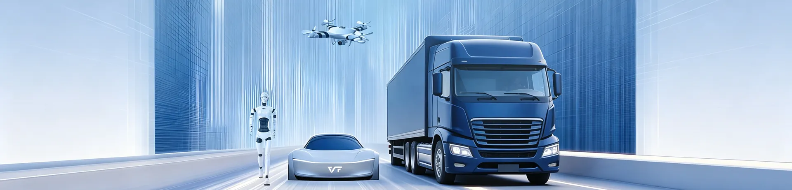
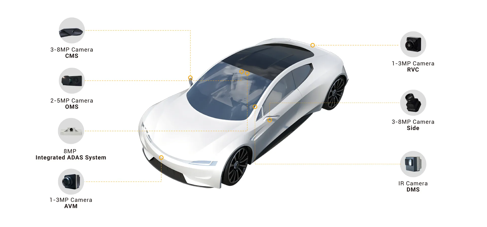
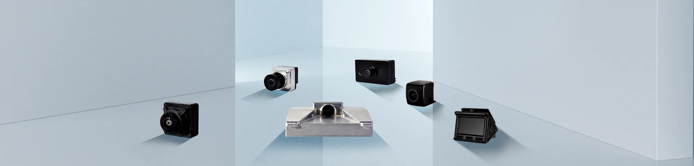
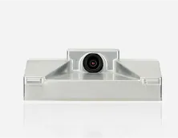
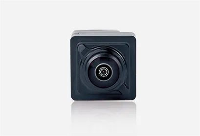
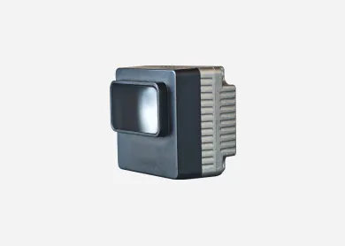
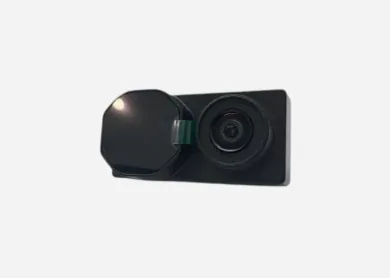

智能感知
VT-Sensing / VT-Navi多目相機與深度學習演算法，實現目標識別、車道線檢測、盲區監測與全景環視。
Technology Roadmap
成本可控技術可控靈活定制技術複用
Technology Roadmap
多目相機與深度學習演算法，實現目標識別、車道線檢測、盲區監測與全景環視。
融合視覺、慣導、輪速等多源資訊，構建高精度定位與建圖能力。
基於域控平台與車規級安全架構，統籌規劃、決策與執行。

VT-Sensing 視覺感知技術基於寅家成熟的汽車底層能力構建，並向低空無人機、農業機器人、具身機器人等多條賽道跨域復用。搭配自研量產的高性能感知攝像頭，以及適應多樣工況的智能感知算法，實現經整車測試嚴格驗證的車規級感知技術跨行業遷移，滿足各業務線在複雜工況、不同功能安全等級下軟硬體一體化的感知需求。


| Camera | Resolution |
|---|---|
| RVC 後視 | 1M–2M |
| AVM/APA 環視泊車 | 1M–3M |
| FVC 前視 | 8M |
| SVC/CMS 側視／電子外後視鏡 | 2M–3M / 3M |
| DMS 駕駛員監控 | 2M–3M |
| OMS 乘員監控 | 5M |
 AVM/APA環視泊車
AVM/APA環視泊車
FVC前視
SVC/CMS側視
DMS駕駛員監控
OMS乘員監控